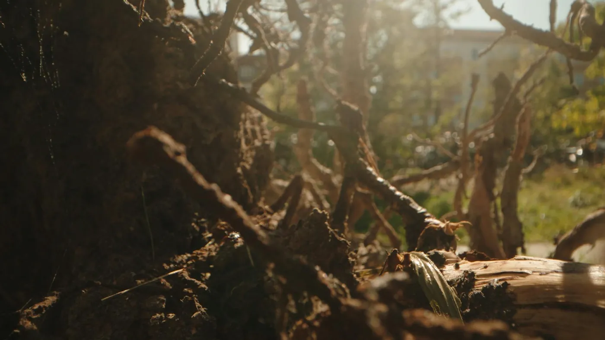
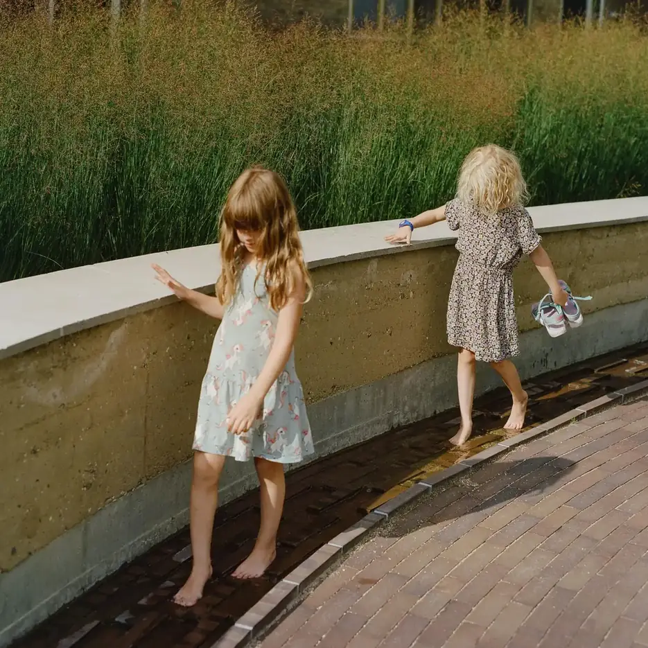

Byrom
ByromPlasser og byrom
Byrom der harde flater og grønt spiller sammen, og der vann får plass til å trekke unna.
Forside / Prosjekter
Vi jobber i skalaer fra en enkelt plass til hele bydeler. Her er feltene vi arbeider i, med bilder fra arbeidet vårt.
ByromByrom der harde flater og grønt spiller sammen, og der vann får plass til å trekke unna.
 Landskap
LandskapStier, vegetasjon og terreng forming etter lokale forhold og årstider.

KlimaLøsninger som håndterer regn, tørke og varme ved hjelp av naturens egne systemer.

Menneskelig brukPlass til lek, hvile og hverdagsliv — uten at naturen blir dekor.
Bildene er fra SLA sine egne prosjektfoto. Konkrete prosjektnamn er ikkje lagde inn i demoen.
Ta kontakt, så viser vi arbeid som ligner deres prosjekt.